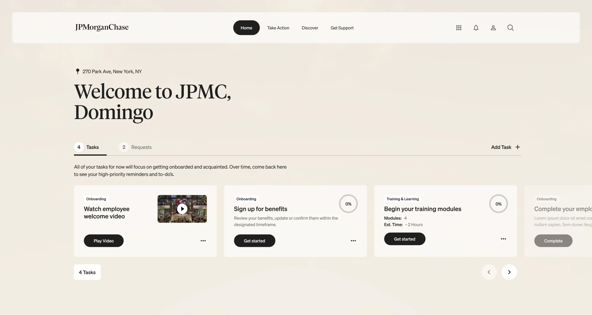
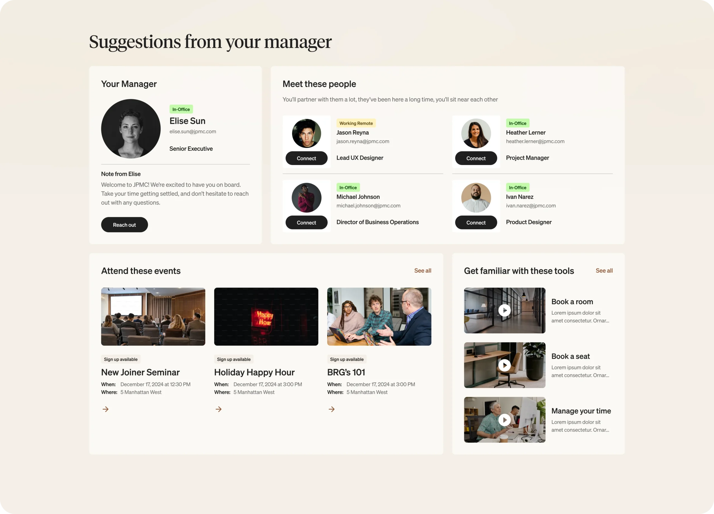
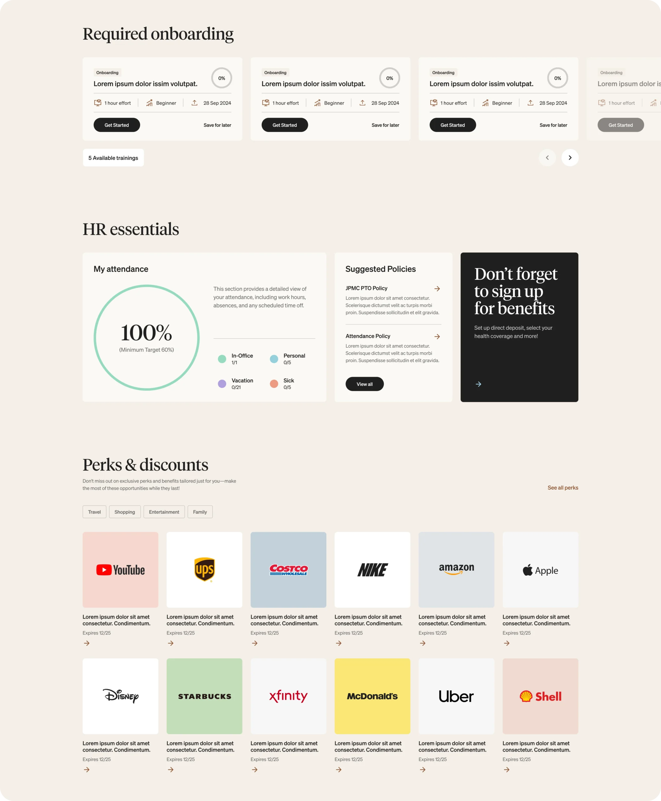
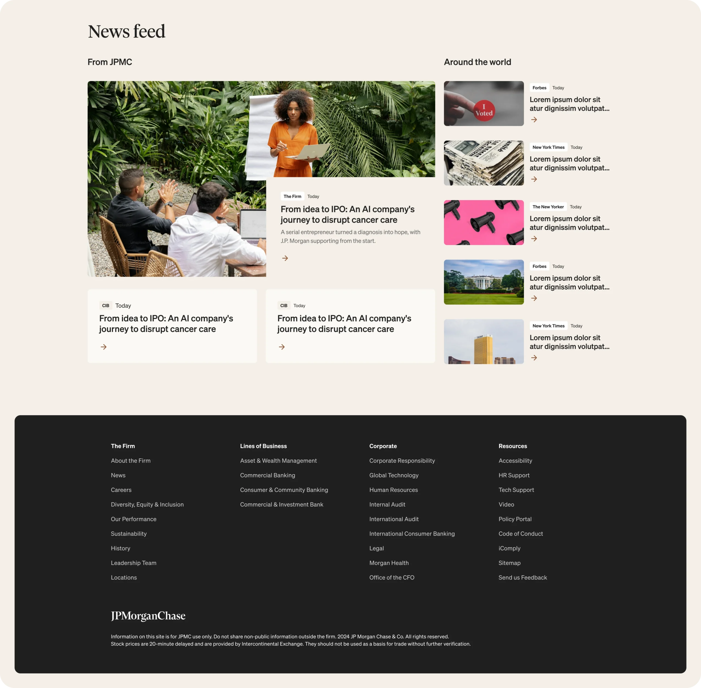

Web Design
JP Morgan Chase HR Portal
Overview
I designed the HR portal for JP Morgan Chase to be a one-stop shop for everything employees need—managing tasks, accessing HR apps, exploring perks, staying updated on company news, and handling requests. The goal was to create a simple, easy-to-use hub that streamlined all HR-related activities in one place.
I focused on understanding the needs of employees across the company and worked on crafting a clean, responsive design that’s both functional and engaging. By prioritizing usability and accessibility, the portal became a go-to resource for employees, making their day-to-day tasks smoother and more efficient.




Thank you for scrolling all the way!